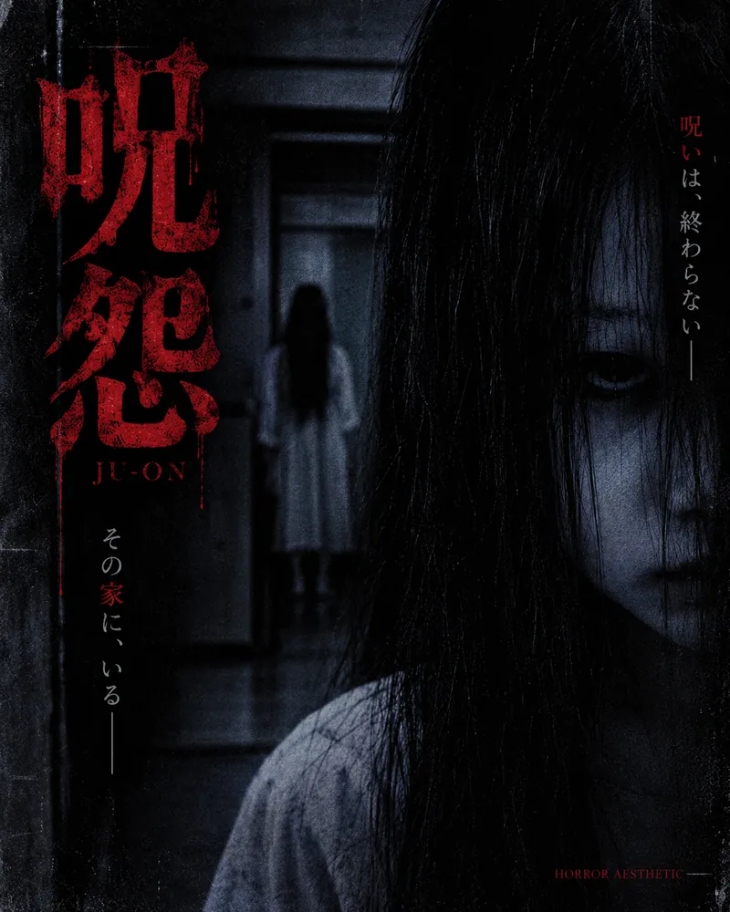
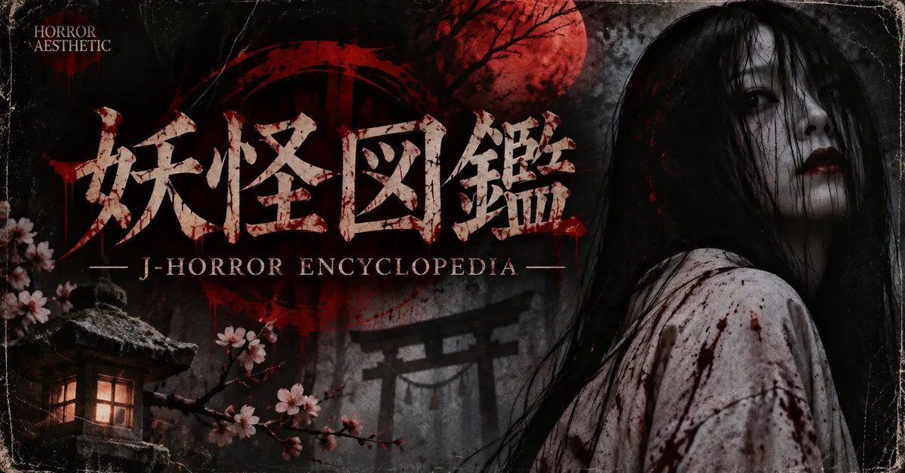

The collection / Index
The Dark Archive
Собрание направлений, тем и материалов HORROR AESTHETIC. Исследуйте архив по жанрам, медиумам и культурным контекстам.




Собрание направлений, тем и материалов HORROR AESTHETIC. Исследуйте архив по жанрам, медиумам и культурным контекстам.

